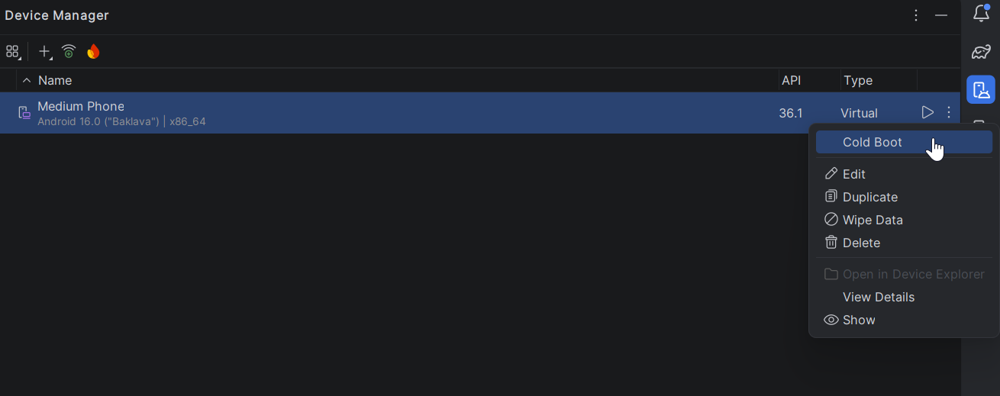
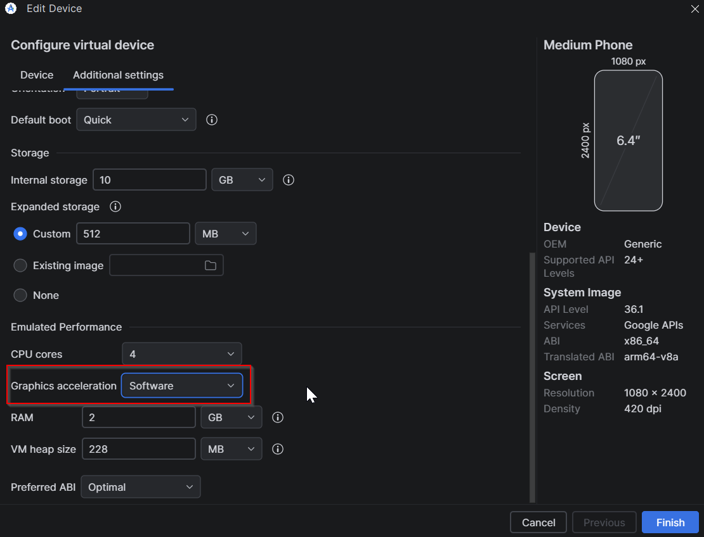

Modul 335 Mobile Applikationen, Hilfeblatt. Der Emulator zeigt schwarz, startet nicht oder hängt.
Dieses Blatt arbeitest du selbst ab, bevor du dich meldest. Die meisten Fälle sind in zwei Minuten gelöst.
Ein Emulator braucht beim ersten Start bis zu drei Minuten. Schwarz ist in dieser Zeit normal. Klick nicht mehrmals auf Run. Jeder Klick startet einen weiteren Versuch, und dann wird es wirklich langsam.
Warte also erst einmal ab. Wenn nach drei Minuten immer noch kein Android-Startbildschirm da ist, ist es ein echtes Problem. Dann gehst du die vier Schritte weiter unten der Reihe nach durch.
Der Grund ist fast immer derselbe. Der Emulator startet nicht jedes Mal neu, sondern aus einem gespeicherten Zustand. Das ist schnell, aber dieser gespeicherte Zustand kann kaputtgehen. Die Schritte 1 und 2 werfen ihn weg.
Das Emulator-Fenster ist offen, aber ganz schwarz. Kein Android, keine Uhr, keine Statusleiste. Arbeite der Reihe nach. Hör auf, sobald es läuft.
1Cold Boot Now.
Das löst die meisten Fälle. Schliesse zuerst das Emulator-Fenster.
Device ManagerCold Boot Now wählen
Jetzt startet der Emulator wirklich von vorne. Das dauert länger als sonst. Gib ihm zwei Minuten.
2Wipe Data.
Hilft Schritt 1 nicht, setzt du das virtuelle Handy zurück. Gleicher Weg wie oben, nur wählst du Wipe Data statt Cold Boot Now.
Das löscht nur im Emulator. Alle dort installierten Apps sind weg. Dein Projekt in Android Studio bleibt unberührt. Es geht kein Code verloren.
3Alte Prozesse abschiessen.
Manchmal hängt im Hintergrund noch ein Emulator von vorhin. Den siehst du nicht, aber er blockiert. Öffne in Android Studio unten das Terminal und tippe diese drei Zeilen, eine nach der anderen:
taskkill /F /IM qemu-system-x86_64.exe adb kill-server adb start-server
Die erste Zeile darf mit Der Prozess wurde nicht gefunden antworten. Das ist kein Fehler, dann lief eben keiner mehr. Danach den Emulator neu starten.
4Grafik auf Software umstellen.
Kommt der schwarze Bildschirm immer wieder, liegt es an der Grafikkarte deines Geräts. Dann stellst du die Grafik dauerhaft um.
Device Manager, drei Punkte, EditShow Advanced SettingsEmulated Performance das Feld Graphics suchenAutomatic auf Software - GLES 2.0 stellenCold Boot Now
Software-Grafik ist etwas langsamer. Für unsere Layouts merkst du davon nichts.
Dann leg ein neues virtuelles Gerät an. Im Device Manager das alte löschen, dann auf das Plus.
| Einstellung | Nimm das | Warum |
|---|---|---|
| Gerät | Pixel 6 | Gut getestet, normale Bildschirmgrösse |
| System Image | API 35 | Passt zu unserem Projekt |
| Graphics | Software - GLES 2.0 | Läuft auf jedem Gerät |
Exotische Geräte und sehr neue System Images machen mehr Ärger, als sie bringen. Bleib bei dieser Auswahl.
| Was du siehst | Was los ist | Was du tust |
|---|---|---|
| Das Emulator-Fenster geht gar nicht auf | Ein alter Prozess hängt, oder der Arbeitsspeicher ist voll | Schritt 3, danach Schritt 1 |
| Weisser statt schwarzer Bildschirm | Android läuft schon, deine App zeichnet noch nichts | Ein paar Sekunden warten, das legt sich meist von selbst |
| Die App startet und schliesst sofort wieder | Ein Fehler in deinem Code, nicht im Emulator | Unten auf Logcat, die erste rote Zeile mit Exception lesen |
Meldung mit INSTALL_FAILED | Eine alte Fassung deiner App blockiert | Im Emulator das App-Symbol gedrückt halten, deinstallieren, dann Run |
| Alles ist zäh und ruckelt | Software-Grafik, oder zu wenig freier Speicher | Bei Software-Grafik normal. Schliesse Browser-Tabs und andere Programme |
Der Run-Knopf ist grau | Es ist kein Gerät ausgewählt | Oben im Auswahlfeld neben Run dein Gerät wählen |
| Die App zeigt den alten Stand | Der Emulator hat die neue Fassung nicht bekommen | Im Menü Build, dann Clean Project, danach Run |
Vier Angaben, dann geht es schnell.
Mit diesen vier Angaben ist die Sache meist in zwei Minuten erledigt. Ohne sie sucht man gemeinsam zehn Minuten lang.
Ein kaputter Emulator ist keine Ausrede für einen unfertigen Auftrag. Melde dich, sobald du bei Schritt 4 angekommen bist. Warte nicht bis zum Ende der Lektion.
Modul 335 | Hilfe | Emulator streikt | Fassung 1 | 11.08.2026